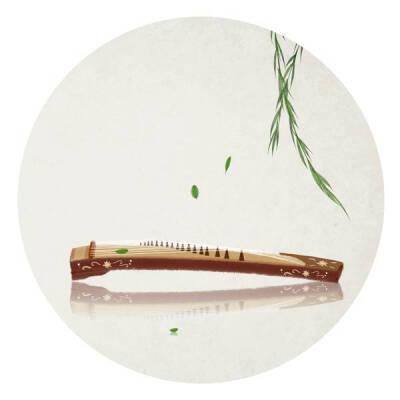
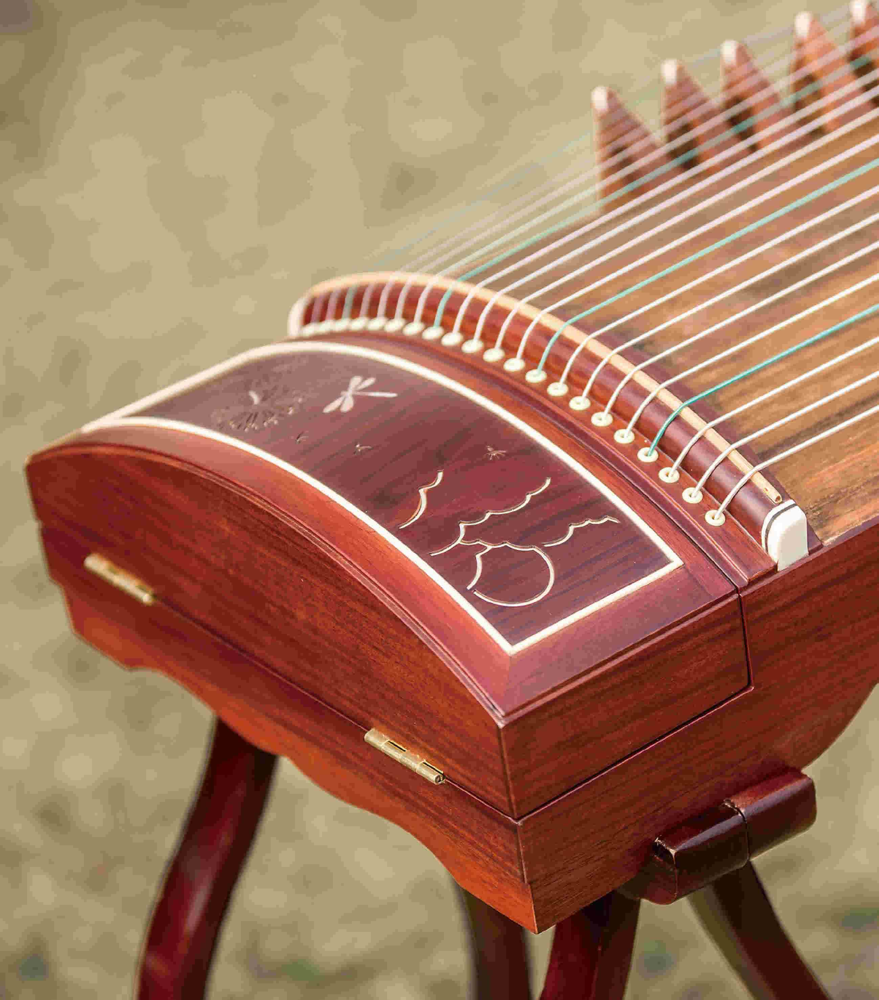
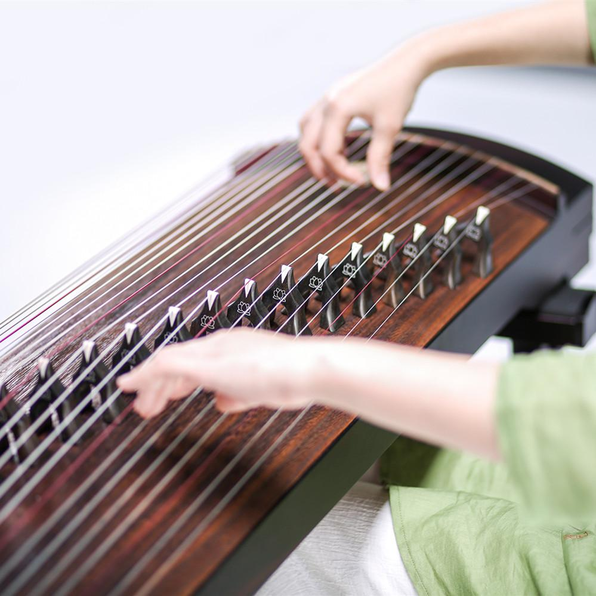

Style of Guzheng

16 Steel Strings
The guzheng used to be made with bare metal wire for strings and typically featured just 16 strings, or 3 octaves +1 note. The samples shown here are made in Taiwan which adds an extra wrinkle. The guzheng developed on its own path in Taiwan due to a policy of limited interaction between the conflicting groups after the Chinese civil wars ended in 1950. That delayed the spread of guzheng with S-bridges and 21 nylon strings for several decades. Taiwanese designs held to older sensibilities for quite some time.

18 Steel String instruments
In a similar vein as the 16-string instruments from Taiwan, below are two 18 Steel String instruments that both happen to come from Hong Kong. The new instruments evolving in Shanghai and other cities spread to Hong Kong before they did Taiwan, leading to some very interesting combinations of new and old. Take a look.

modern guzheng
This here is a modern, full-sized guzheng with 21 nylon-coated steel strings, with the bass strings wound in copper. The fixed bridge on the right is straight while the one on the left is curved into an S. The tuning pins are in a compartment at the head of the instrument. The tail is where the strings are anchored.